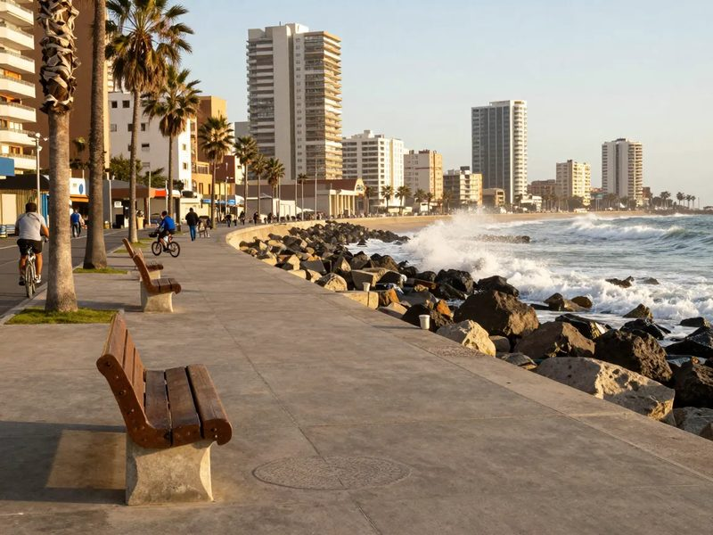
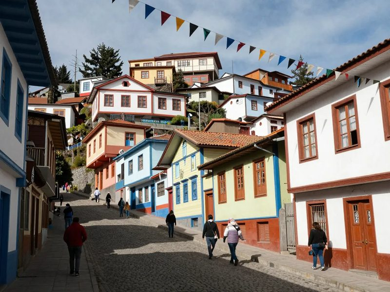
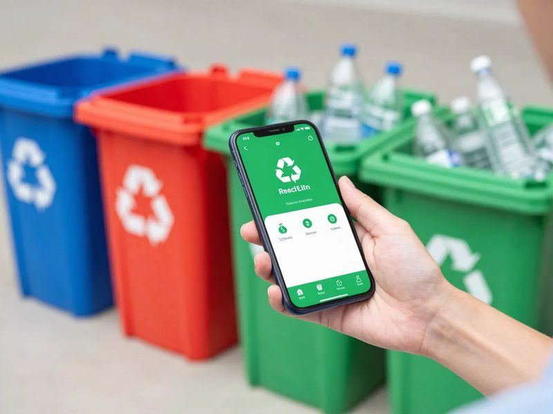
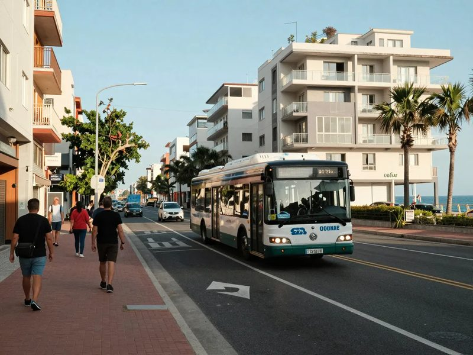
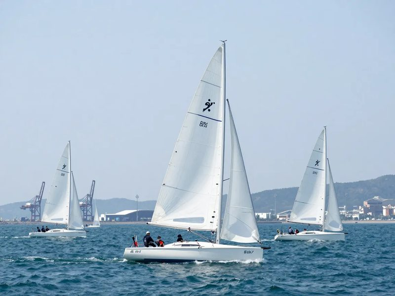
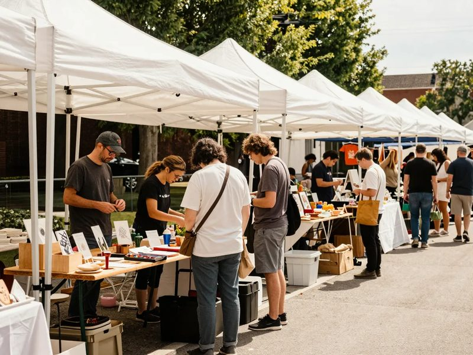

Diario El Faro
Las noticias de Viña del Mar y la región, al día.

Viña del Mar renueva su borde costero con nuevo paseo peatonal
Publicado hoy · Redacción El Faro
Everton prepara su pretemporada en Sausalito
Hace 2 horas

Festival de teatro llega a los cerros de Valparaíso
Hace 4 horas

Emprendedores locales crean app para reciclaje
Hace 6 horas

Nueva ruta de transporte conecta Reñaca y el centro
Ayer

Regata internacional zarpa desde el puerto
Ayer

Feria de emprendimiento reúne a pymes de la región
Ayer